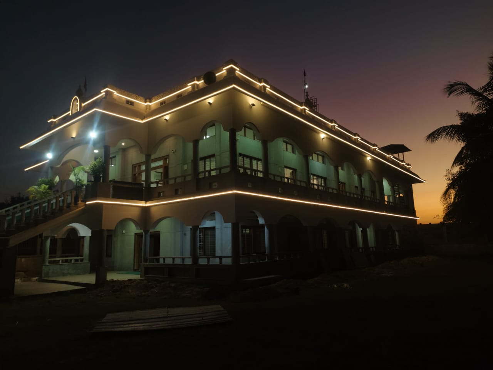

ಶ್ರದ್ಧಾ • ಓಂ ಶ್ರೀ ಸಾಯಿರಾಂ • ಸಬುರಿ

ಶ್ರೀ ಶಿರಡಿ ಸಾಯಿಬಾಬಾ ಮಂದಿರ ಟ್ರಸ್ಟ್,
ಬಿದಿರೆ ಕ್ರಾಸ್, ಸಾಯಿನಗರ, ಬಿ.ಹೆಚ್. ರಸ್ತೆ,
ಶಿವಮೊಗ್ಗ
ಸದ್ಭಕ್ತರು ಕುಟುಂಬ ಸಮೇತರಾಗಿ ಬಂದು ಈ ಪವಿತ್ರ ಕಾರ್ಯಕ್ರಮದಲ್ಲಿ ಭಾಗವಹಿಸಿ, ಶ್ರೀ ಸಾಯಿಬಾಬಾರವರ ಕೃಪಾಶೀರ್ವಾದ ಪಡೆಯುವಂತೆ ವಿನಂತಿಸಿಕೊಳ್ಳುತ್ತೇವೆ.
ಸೇವಾ ಕಾರ್ಯಗಳಿಗೆ ನಿಮ್ಮ ಸಹಕಾರ ಸ್ವಾಗತಾರ್ಹ
ಸ್ಕ್ಯಾನ್ ಮಾಡಿ ದೇಣಿಗೆ ನೀಡಿ
9845732240@sbi
UPI ಮೂಲಕ ದೇಣಿಗೆ ನೀಡಿನಿಮ್ಮ ಫೋನ್ನಲ್ಲಿ UPI ಅಪ್ಲಿಕೇಶನ್ ಇದ್ದರೆ ಮೇಲಿನ ಬಟನ್ ಮೂಲಕ ಪಾವತಿ ಪ್ರಾರಂಭಿಸಬಹುದು.
ಸೂಚನೆ: ಪೋಸ್ಟರ್ / ಸ್ಕ್ರೀನ್ಶಾಟ್ನಲ್ಲಿ QR ಸ್ಕ್ಯಾನ್ ಮಾಡಬಹುದು. ವೆಬ್ಪುಟದಲ್ಲಿ UPI ಬಟನ್ ಮೂಲಕ ನೇರ ಪಾವತಿ ಪ್ರಯತ್ನಿಸಬಹುದು.
ಶ್ರೀ ಶಿರಡಿ ಸಾಯಿಬಾಬಾ ಮಂದಿರ ಟ್ರಸ್ಟ್
ಶ್ರೀ ಶಿರಡಿ ಸಾಯಿಬಾಬಾ ಮಂದಿರ ಟ್ರಸ್ಟ್, ಶಿವಮೊಗ್ಗ
ಅಧ್ಯಕ್ಷರು ಮತ್ತು ಕಾರ್ಯಕಾರಿ ಸಮಿತಿ, ಶಿವಮೊಗ್ಗ